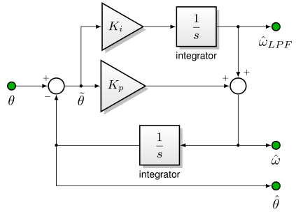
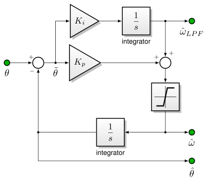

5.4.3. 正交编码器支持¶
5.4.3.1. 概述¶
MCAF 支持通过 dsPIC® DSC 的 QEI（正交编码器接口）外设使用正交编码器（带或不带索引脉冲）进行闭环速度运行。
在原型开发阶段，使用正交编码器非常有价值，它可以与无传感器估计器配合使用，以验证或排查估计器的运行。MCAF 允许多个估计器同时执行 — 以额外的 CPU 开销为代价 — 但只能有一个估计器用于换相。
只要编码器信号接收无显著误差，正交编码器就能提供相对位置变化的准确跟踪。此外，角度分辨率是编码器的函数；高端编码器可以每机械转提供数千个脉冲。然而，编码器本身无法提供以下功能：
始终保持绝对位置精度
无索引脉冲的编码器无法提供绝对位置精度
带索引脉冲的编码器在检测到索引脉冲后可以提供绝对精度，但在此之前，无法从编码器确定绝对位置
速度测量 — 编码器提供量化位置；速度必须通过单独的算法从位置估计
确定 PMSM的电气换相偏移，以定位电机最大转子磁通相对于编码器位置的位置
MCAF 通过 反电动势同步 来确定换相偏移，并通过 跟踪环 从位置估计速度。
5.4.3.1.1. 使用说明¶
编码器通常以“线数”或“每转周期数”（CPR）表示。每转脉冲数与线数或 CPR 之间存在 4:1 的关系：例如，256 线 = 256 CPR = 1024 每转脉冲数。
dsPICDEM® MCLV-2 开发板的编码器/Hall 输入上有 100 pF 滤波电容。这些电容可能对高脉冲率的编码器造成问题，在这种情况下应移除电容 C49、C50 和 C51，或替换为更小的值，如 10 pF。
5.4.3.1.2. 局限性¶
截至 MCAF R9：
不支持位置控制
不支持零速附近的运行 — QEI 支持仅限于作为无传感器估计器的直接替代品使用，需要通过强制换相启动。
索引脉冲在 dsPIC® DSC 33F、33E、33C 和部分 33A 器件中仅支持 2 的幂次方编码器分辨率。非 2 的幂次方编码器脉冲数由 QEI 外设的取模模式支持；索引脉冲由 QEI 外设的位置捕获功能支持，该功能在这些器件中不能与取模模式同时使用。
5.4.3.2. 跟踪环¶
5.4.3.2.1. 概述¶
从编码器位置估计速度有很多方法。一种简单的实现会尝试对速度信号求导，但由于编码器对转子位置进行量化，在中等速度下结果将是一堆零和一。（例如，考虑一个 1024 每转脉冲数的编码器在以 1000 RPM = 16.667 转/秒运行的电机上。这产生大约 17067 脉冲/秒的编码器脉冲率。以 20 kHz 运行的控制 ISR 每次 ISR 会看到 0 或 1 个脉冲的变化。在 10000 RPM 时，同一电机/编码器将产生 170667 脉冲/秒，控制 ISR 每次会看到 8 或 9 个脉冲的变化。在两种情况下，速度的最大量化误差都等于 0.5 脉冲/ISR = 1/2048 转 * 20 kHz = 9.77 转/秒 = 586 RPM。）
估计速度的一种方法是计算每个控制周期的位置变化，并使用低通滤波器确定速度。MCAF 使用的是略有不同的方法，称为跟踪环。
跟踪环本质上只是以状态变量形式实现的低通滤波器，以产生有用的估计。在 图 5.56所示的跟踪环中，输入角度 \(\theta\) 可能含有噪声，无论是模拟噪声还是（对于编码器）量化噪声。环本身仅包含一个 PI 控制器来估计速度 \(\hat{\omega}\) ，然后积分形成估计角度 \(\hat{\theta}\) 用于形成 PI 环的误差项。

图 5.56 用于从位置估计速度的跟踪环¶
跟踪环的输出为
\(\hat\omega_{LPF}\) — 积分器输出可用作中等带宽的速度估计。
\(\hat\omega\) — PI 输出包含将误差驱动至零所需的高频分量。它通常不适合通用，因为来自 \(\theta\) 的噪声通过比例（P）项直接馈入。
\(\hat\theta\) — 估计角度滤除了量化噪声的高频分量，可用于位置控制应用；也可用于换相应用，但相位滞后至关重要，必须仔细分析。
关于单位选择的说明： 跟踪环可以同样适用于任何需要估计低频导数的物理量；其输入可以是以 °C 为单位的温度，输出为 °C/s，而不是以位置为输入、速度为输出。
5.4.3.2.2. 频域等效¶
从实际角度/速度输入（假设加性噪声）到输出的传递函数为：
需要注意以下几点：
所有情况下分母都构成二阶系统，可以写成 \(\tau^2s^2 + 2\zeta\tau s+1\) 其中 \(K_i = 1/\tau^2\) 和 \(K_p = 2\zeta/\tau\)。量 \(\zeta\) 表示阻尼因子，应保守设置，可能在 1–1.5 范围内。时间常数 \(\tau = 1/\omega_n\) 与带宽成反比。
到 \(\hat{\omega}_{LPF}\) 的速度传递函数没有零点；到 \(\hat{\omega}\) 的速度传递函数在 \(s=-K_i/K_p=-1/2\zeta\tau\)。
5.4.3.2.3. 实现说明¶
MCAF 用于正交编码器支持的跟踪环对机械角度 \(\theta_m\)运行，输出为估计机械角速度 \(\omega_m\)。此选择保留了一个完整的机械转内的角度位置，以支持未来的位置控制应用。
MCAF 使用滤波后的速度， \(\hat{\omega}_{LPF}\)用于速度估计。
MCAF 的跟踪环实现添加了一个限幅器模块，如 图 5.57所示，防止计算 \(\hat\omega\)时发生溢出。

图 5.57 跟踪环实现¶
5.4.3.3. 反电动势同步¶
反电动势同步的目标是估计换相偏移，使得 FOC 能够在完美对齐的参考坐标系下运行。当转子（\(dq\)）参考坐标系与 PMSM的转子磁通和反电动势完美对齐时，具有以下性质：
反电动势 — 当 \(I_q = I_d = 0\) 以非零速度运行时，电机的端电压沿 q 轴方向并与机械速度 \(\omega_m\)成正比；端电压没有 d 轴分量。换相偏移的变化会导致非零的 d 轴分量。
d 轴转矩 — 当 \(I_q = 0, I_d \ne 0\)时，不产生转矩。换相偏移的小变化会导致与 \(\tilde\theta\)（换相偏移误差）成正比的净电机械转矩： \(T_{em} = \frac{3}{2}K_eI_d \sin\tilde\theta\)。
q 轴转矩方向 — 当 \(I_d = 0, I_q > 0\)时，产生正转矩。（180° 偏移误差产生负转矩）
MTPA — 对于表贴永磁电机（SPMSM）， \(I_d = 0, I_q > 0\) 产生最大转矩，换相偏移的任何变化都会减小产生的转矩。此条件称为“每安培最大转矩”或 MTPA。
饱和导致的各向异性 — 当 \(I_q = 0, I_d > 0\)时，铁饱和发生的电流低于换相偏移发生任何变化时的电流。饱和导致增量电感减小 \(\partial \psi \over \partial I\)。这是因为定子磁场与转子磁场叠加，以在给定定子电流下最大化定子磁场。
凸性导致的各向异性 — 对于具有转子凸性的电机（如内置永磁电机 = IPMSM），d 轴和 q 轴是电感矩阵的特征矢量，因此 \(I_d\) 的变化产生定子磁通 \(\psi_d\) 的变化，而 \(\psi_q\)不变，同样 \(I_q\) 的变化产生定子磁通 \(\psi_q\) 的变化，而 \(\psi_d\)。换句话说，磁通方程可以写成方程 5.27所示的形式，其电感矩阵没有非对角项。换相偏移的变化会导致磁通方程中出现非零的交叉轴项。
所有无传感器估计器都利用了至少一个这些性质来辨别真实的转子参考坐标系，在带宽、稳定性、收敛性、复杂性、功耗和精度方面有不同的权衡。
MCAF R4 在 qei_sync 模块中引入了反电动势同步。可以选择三种方法之一，每种方法都与 启动序列中的钩子交互：
align（对齐） — 对齐方法在启动的对齐阶段以固定角度施加固定电流，并期望转子在低速时具有最小的机械负载，会旋转使其 d 轴与施加的电流矢量对齐。（此方法依赖 d 轴转矩性质。）这是 MCAF 的默认方法，速度很快，对大多数电机效果良好，只要齿槽转矩或其他机械负载相对较低，且在低转矩负载下转子凸性的影响较小。
pullout（失步） — 失步方法减小启动稳速阶段使用的电流，直到观察到转子角度开始从施加电流的角度显著减小。（此方法依赖 MTPA 性质。）此方法不受齿槽转矩误差的影响，但对强制换相的动态特性敏感。
align-and-sweep（对齐并扫描） — 对齐并扫描方法在启动的对齐阶段以缓慢变化的角度施加固定电流。施加的电气角度在正向和反向旋转一个完整的机械转，在两个结果区间内，对施加的电气角度与测量的编码器角度之差取平均，以获得换相偏移的估计。此方法较慢，但可以在大多数电机中产生非常准确的换相偏移估计。
这些方法在以下章节中有更详细的描述。
在所有情况下，换相偏移仅在一次启动迭代中估计；一旦完成，结果值被重复使用，后续的启动序列将跳过反电动势同步。